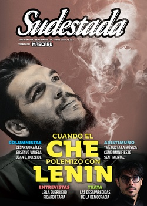

Buscar
"Me gusta la música como manifiesto sentimental"
Un gran desafío espera a Lisandro Aristimuño. Cada vez más convocante, el patagónico legitimado como un compositor y autor clave en las músicas de raíz y vanguardia, y también en el rock y el pop que no transige su fe independiente, tocará por primera vez en el Luna Park, el 16 de septiembre, para presentar su noveno disco Constelaciones y sus clásicos. Junto a Sudestada, repasa claves de su inspiración, su mirada sobre la autogestión y la industria, sus huellas y referentes, qué lo moviliza a nivel político y qué mundo desea para los niños del futuro.
Edición N° 149
Septiembre-octubre 2017
Revista bimensual
Comprar edición impresaSumario
- Cuando el Che polemizó con Lenin
- ¿Dónde está Santiago?
- "Me gusta la música como manifiesto sentimental"
- Mensajes en las paredes del tiempo
- Trata. La desaparecidas de la democracia
- La vida del miedo
- Una polìtica sin afuera
- “Lo colectivo lo fuimos aprendiendo todos en estos años”
- Pergamino en llamas
- "Un periodista sin calle está desnutrido de experiencia"
- La amenaza mapuche
Compartir Articulo
Lisandro Aristimuño enciende un cigarrillo y mira su diminuto muñeco de Michael Jackson junto al mouse, que mueve por reflejo frente a la pantalla. "Muchos músicos argentinos piensan que la música es de ellos. Vos hacés canciones o interpretás, pero la música no es de nadie. Pensar eso me ayuda mucho en la autogestión y en la independencia. ¿Sabés por qué? Porque no me la creo. Yo no me creo quien soy, amo la música. Y ahí está la diferencia".
En la barra de su estudio-oficina de Villa Urquiza, el compositor, guitarrista y arreglador de Viedma, Río Negro (con quince años en Buenos Aires), tira las colillas en el cenicero, abre una lata de cerveza artesanal y enfoca más allá: en las cinco guitarras acústicas colgadas en fila en la pared. "En todos mis discos hay secretos, y el día de mañana los voy a decir. Hay mensajes ocultos", sonríe largando el humo. A los 38 años, nuevas revelaciones esperan al creador y voz clave de dos generaciones y escuelas sonoras en pleno siglo xxi. De la música de raíz y vanguardia en coordenadas abiertas, y del rock y el pop local en alto vuelo sin red. Con profundo y luminoso poder sonoro.
Ambas líneas confluyen desde su ojo independiente en una expansión masiva indudable: gira por el país sin freno, hizo shows en México, a fines de marzo en el Lollapalooza y, en mayo, abrió el último show de Sting en Buenos Aires. ¿El sueño independiente se expande para los otros? Tras haber agotado ocho Gran Rex desde que editó su disco Mundo anfibio (2012), multiplicar escenarios del interior y girar en 2016 con Raly Barrionuevo, tiene otra revelación popular al frente. El sábado 16 de septiembre hará su primer Luna Park para presentar su noveno disco Constelaciones, que editó su propio sello Viento Azul Discos. Luego seguirá en Montevideo y Santiago de Chile; volverá a los caminos…
–A tu bagaje independiente y todo lo que reúne Constelaciones, ¿cómo lo vas a llevar al Luna Park?
–Como lo hago siempre. Tengo la suerte de que mi carrera fue de menor a mayor. El laburo que hicimos con mucha gente y amigos fue caer acá con una mochila, y ahora terminar con una valija llena de cosas hermosas. No es que me agarró un productor y al otro día me llevó al Luna Park. Porque ahí sí tendría problemas. En este momento me parece natural que lleguemos al Luna Park. ¿Por qué? Porque hicimos ocho Gran Rex y cada vez es más gente la que viene. Entonces dijimos: "Vamos a hacer un lugar más grande donde estemos todos juntos". No lo veo como algo alocado ni me sorprende. No por canchero, sino porque era lo que se venía. Yo empecé con treinta personas y ahora lo sentí diferente. Me siento capaz de estar en el Luna y llenarle a la gente el corazón con mi música. Si me hubieras agarrado en 2005 te habría dicho "nooo, ¿estás loco?". Si me hubiera agarrado una multinacional, qué sé yo... Ahí está siempre el negocio detrás. La industria tiene la culpa. La música no.
Un salto de identidad. Eso significó Constelaciones, donde trascendió su búsqueda expansiva (acústica, eléctrica, digital, orquestal). De la tierra y las respiraciones folclóricas que surcaron sus discos iniciales se fue elevando a íntimas versiones de sí mismo; más pop y rockeras en una nueva conexión astral con el mapa musical argentino. Para Constelaciones armó una banda nueva (luego de años con sus Azules Turquesas), con el vigor de Javier Malosetti en bajo y Sergio Verdinelli en batería –dos músicos de Spinetta–. Mantuvo a Ariel Polenta en teclados y potenció la idea con Nicolás Ibarburu, Nico Bereciartúa, David Soler, y los vientos de Juan Canosa, Ramiro Flores y Sergio Wagner, entre otros.
La belleza final es celeste y primal rumbo al Sur. Aristimuño une sus vibraciones por Los Beatles (por momentos más George Harrison) y por sus cuatro maestros León Gieco, Charly García, Spinetta y Fito Páez, con otros secretos y revelaciones en cada una de las incontables guitarras eléctricas. Otras más folk y los capas de coros y voces alrededor de canciones imbatibles como "Hoy, hoy, hoy" o "De nuevo al frío"; hipnóticas como "Good morning life", el blues doliente "Una flor"; el folk-rock de "Voy con vos"; el magnético conjuro de padre a hija en "Tres estaciones", entre otras. Hallándose así, Aristimuño no mira al cosmos para aislarse en su cuna de inspiración. Como dice en "Constelación once": "Nunca tuve miedo de aquel patrón, siempre defendí nuestro cielo. Así yo doy sin recibir amor, así voy a morir mejor".
¿Cómo verlo aquí? Aristimuño da otro trago a la cerveza artesanal, con otro pucho en la mano y los ojos en Michael Jackson. "Cuando hice Mundo anfibio en 2012, Santa Fe se inundó por culpa de un gobierno que no tuvo precauciones. Hubo gente que se quedó sin casa y yo saqué Mundo anfibio adrede. Es un diario. Constelaciones también es un diario, ya vas a ver. Son cosas que realmente pienso y estudio: me compro libros. Mis discos son conceptuales, estudio mucho antes de hacerlos. Para Constelaciones me compré libros; para Mundo anfibio también. Leo sobre animales anfibios, sobre constelaciones. Lo más espiritual y lo menos espiritual, la NASA. Y hay partes de las letras que salen de ahí.
–¿Tienen que ver con algo más metafísico o sobre la ciencia y los astros?
–Yo voy a una librería y digo: "¿Tenés cosas de las constelaciones, las estrellas?". A veces miro las figuras, los dibujos, a veces leo alguna parte. Tampoco estoy todo el día leyendo, porque sería mentira. Pero me gusta saber de lo que voy a hablar. Por ejemplo, de ver que el horóscopo de un diario te diga "hoy te va a ir bien, o mal" y responder a eso, me salió el tema "Hoy, hoy, hoy", de Constelaciones: "Hoy, hoy, hoy, yo voy a ser feliz. Hoy, hoy, hoy, yo quiero estar así".
El disco tiene once temas y en cada uno figura "Constelación I", "Constelación II", "Constelación III", "Constelación IV", etc. y al lado el nombre. "Cada tema tiene una búsqueda de personalidades que fueron investigadas", afirma Lisandro.
–Algunos dijeron que Constelaciones está atravesado por la presencia de tu hija, Azul.
–Yo creo que el anterior más aún. Mundo anfibio es la panza de la mamá y ella en el agua. Pero Constelaciones tiene una cosa de Azul: la mirada de ella del mundo y su personalidad que se va armando. Casualmente es de Piscis y yo le hice Mundo anfibio. Yo no sabía cuándo iba a nacer, de qué signo iba a ser y es acuática. En cambio, a Constelaciones lo vi más en su mirada. El disco tiene que ver más con "dejémonos de boludeces, y pensemos realmente qué les vamos a dejar a ellos". Cuando pensé eso, miré el cielo y era de noche. Había estrellas y dije: "¿Estará allá arriba el futuro? ¿Habrá algo allá?". Ojalá que haya otro planeta donde mi hija pueda vivir bien. Ahí empecé a imaginarme esas constelaciones, esos mensajes. Mandar a otro planeta a niños menores de diez años para que crezcan bien. Ellos nacen tan puros que te hacen preguntas escalofriantes y vos decís: "Tendrías que irte a otro planeta". Porque este no me gusta. No me gusta que maten a una chica y nadie sepa quién fue. O que desaparezca Santiago Maldonado y no se sepa a dónde está. Está todo comprado y no quiero que mi hija viva en un mundo así. Eso me aterra, me amarga y me pone triste. Por eso hago las canciones que hago. Hay algunos que dicen: "Tu música es re depre". Y bueno, loco, pero te estoy diciendo que el mundo se va a acabar. No te hablo de boludeces...
(La nota completa en la edición gráfica de Sudestada... ¿Por qué publicamos apenas un fragmento de cada artículo? Porque la subsistencia de Sudestada depende en un 100 por ciento de la venta y de la confianza con sus lectores, no recibimos subsidios ni pauta alguna, de modo que la venta directa garantiza que nuestra publicación siga en las calles. Gracias por comprender)
Comentarios
Patricio Féminis
Articulos más vistos


LIBRERÍA SUDESTADA

Colección infantil

Distribuidora de Libros

Suscripción

Sudestada en URUGUAY

Otros articulos de esta edición
Una polìtica sin afuera
Una política sin afuera es una política de cuerpo excluido. No una entelequia. Una puesta en escena. Una política de ...
Cuando el Che polemizó con Lenin
Durante su etapa al frente del destino económico cubano, como ministro de Industrias, Ernesto Guevara se preocupó por formarse al ...
Trata. La desaparecidas de la democracia
Una mujer desaparece en la Argentina cada 62 horas, según la Procuraduría de Trata y Explotación de Personas (PROTEX). En ...
La vida del miedo
“Lo colectivo lo fuimos aprendiendo todos en estos años”
Con casi treinta años sobre los escenarios y un disco nuevo en la calle (Criollo), Ricardo Tapia, cantante y compositor ...
La amenaza mapuche
Detrás de una campaña típica de demonización por parte del gobierno de turno, se oculta una trama compleja. ¿Qué se ...